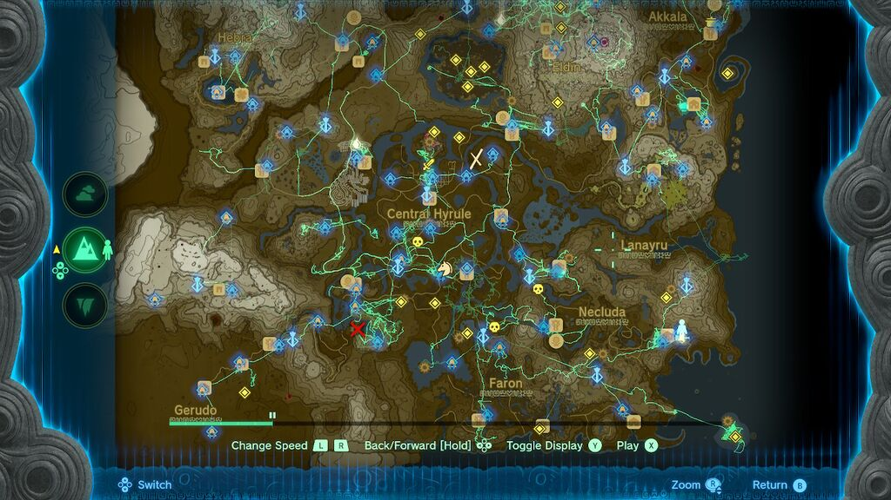

图：英雄足迹模式——地图上按 X，绿线会画出你走过的路，跑过的地方一目了然。
先说结论：启动 15 座神庙，回来解锁
完成研究所任务后找洛贝利选足迹模式，他要你收集 15 座神庙的位置数据。去各地启动 15 座神庙——只要走到神庙前交互启动，不用通关里面的谜题——回来找他交谈，英雄足迹模式解锁。地图上按 X，就能看到自己走过的路线，最多记录最近 256 小时。
| 阶段 | 要做的事 |
|---|---|
| 接任务 | 研究所找洛贝利，选足迹模式 |
| 收集数据 | 各地启动 15 座神庙，不用通关 |
| 解锁 | 回研究所找洛贝利交谈 |
| 使用 | 地图按 X 看足迹，最多 256 小时 |
接取与奖励
| 项目 | 内容 |
|---|---|
| 接取 | 完成「哈特诺村的研究所」后，在研究所找洛贝利对话，选足迹模式 |
| 位置 | 哈特诺村东边山顶 · 古代技术研究所 |
| 奖励 | 地图解锁英雄足迹模式 |
| 后续 | 旅行奖章、传感器+，找洛贝利接 |
任务总览
| 顺序 | 步骤 | 要点 |
|---|---|---|
| 1 | 接任务 | 研究所找洛贝利，选足迹模式 |
| 2 | 启动 15 座神庙 | 交互启动就行，不用解谜；之前启动过的也算 |
| 3 | 回研究所交谈解锁 | 找洛贝利，他把足迹模式装到普尔亚平板上 |
| 4 | 地图按 X 查看 | 绿线画出走过的路；再按 X 从头播放 |
第一步：找洛贝利接任务
研究所任务做完再来找洛贝利，他会多出几个平板升级选项，选足迹模式。他要收集 15 座神庙的位置数据，才能把这个功能装到普尔亚平板上。
第二步：去启动 15 座神庙
全游戏一共 152 座神庙，地面 120 座、天空 32 座。只要走到神庙门口调查发光标记，神庙就算启动，数据就收进来了，里面的谜题不用解。之前启动过的也算数——很多人接任务时早就超过 15 座了，直接回去交差就行。还没启动够的，优先去附近没去过的神庙；神庙感应器（研究所任务给的）能帮你找，靠近没去过的神庙会响。

图：神庙入口——走到门口调查发光标记，神庙就算启动，数据就收进来了。
第三步：回去找洛贝利解锁
15 座够了就回研究所找洛贝利，他把足迹模式装到普尔亚平板上。打开地图按 X，绿线画出你走过的路；再按一下 X，还能从头播放整段路线，连每次死亡的位置都标得清清楚楚。记录最多保存最近 256 小时，超过的部分会被新的覆盖。

图：哈特诺村研究所——15 座神庙的数据够了，回来找洛贝利，他当场给你装上。
💡 找神庙的小窍门
神庙感应器只对没去过的神庙响；鸟望台弹射上天后，空中能看到不少神庙的绿光；地底树根与地面神庙一一对应，树根的位置也能反推神庙在哪。关键信息表
| 项目 | 内容 |
|---|---|
| 神庙总数 | 152 座：地面 120、天空 32 |
| 需要数据 | 15 座，只需启动，不用通关；之前启动过的也算 |
| 解锁后用法 | 地图按 X 开关；再按 X 从头播放路线 |
| 记录长度 | 最多最近 256 小时，旧的会被新的覆盖 |
| 找神庙帮手 | 神庙感应器、鸟望台、地底树根对照 |
容易翻车的地方
- 以为要通关 15 座神庙——不用，启动就行。
- 接了任务到处跑却不回研究所——数据够了要回去找洛贝利才解锁。
- 地图上按 X 没反应——要先解锁，解锁前按了也没用。
- 在神庙门口转圈不调查——不调查标记就不算启动。
一句话总结
研究所接任务，启动 15 座神庙（不用通关），回去找洛贝利解锁——地图按 X，走过的路全画出来了。